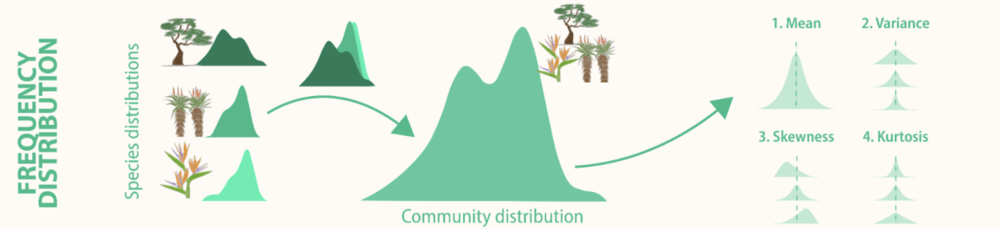
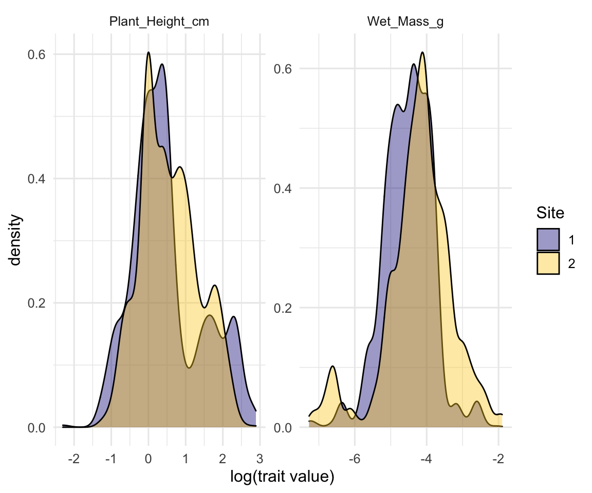
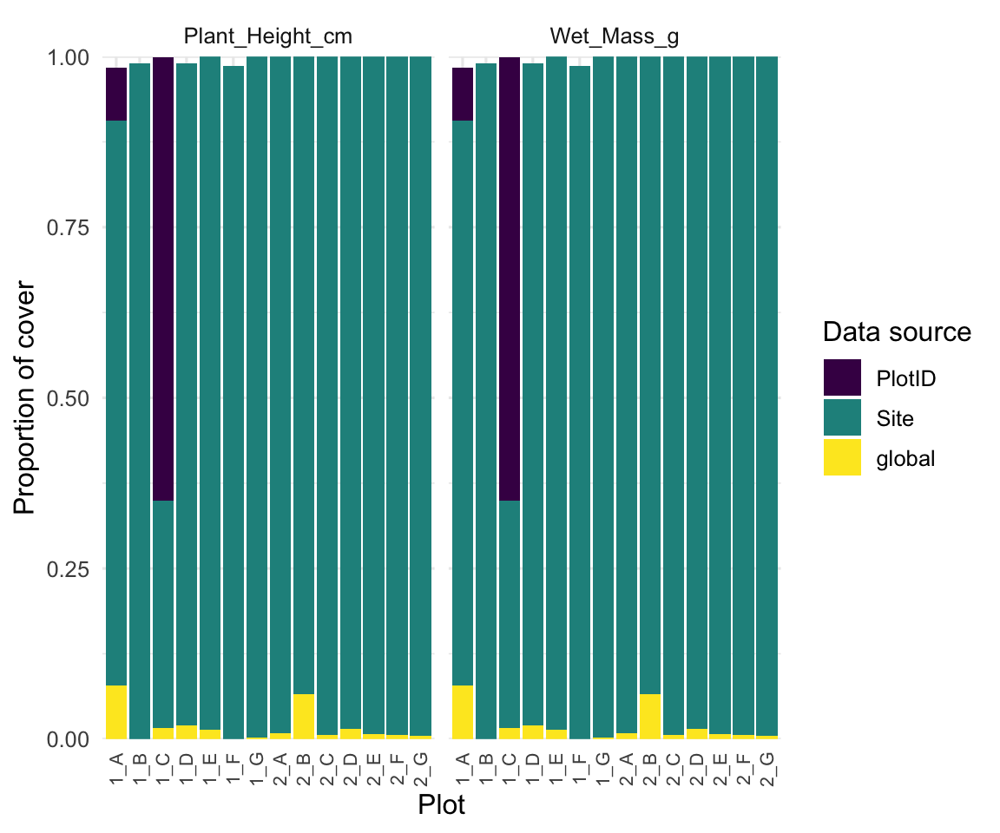

11 Bootstrapping trait data
This vignette explains how to use the traitstrap package (Telford et al). For more details on the methods see Maitner et al.
First of all, relax and turn on some music. We have prepared the traitstrap playlist for you!
11.1 The aim of traitstrap
Trait distributions can be used to infer the importance of community assembly processes and the role of climate drivers in shaping species and community responses to climate change. Community ecology has typically focused on the mean, however the higher moments (variance, skewness, and kurtosis) of trait distributions can reveal information about the various processes shaping species diversity.

Measuring trait distributions is often difficult and time-consuming as it requires information on measuring trait values of all individuals present. Sampling protocols often limit sampling to a non-representative subset of the community, or rely upon species-level average traits values calculated in other locations or across many locations.
Traditionally the moments of trait distributions have been estimated using weighting approaches that rely on the average traits of species weighted by some measure of abundance within the community. Such community-weighted trait moments methods assume that a species’ trait expression can be adequately represented by the mean, ignoring intraspecific trait variation.
To more accurately estimate local trait distributions, trait sampling should thus occur both across multiple individuals within each species, and across multiple locations or experimental treatments across the extent of the study in order to capture both inter- and intra-specific variability.

Traitstrap is an R package to estimate the moments of community trait distributions using a bootstrapping approach. Further, this package uses a hierarchical sampling design, which allows accounting for incomplete trait collections, traits from different spatial or temporal levels (e.g. local traits vs. databases), taxonomic hierarchies (e.g., species vs genus) and experimental designs (e.g., multiple sites, or treated vs. control sampling units).
The package has three main functions:
- trait imputation function which allows to account for intraspecific trait variation and hierarchical sampling design.
- a resample method using bootstrapping (parametric or nonparametric method) to calculate community weighted mean and happy moments (variance, skewness and kurtosis).
- a summary function that summarizes the trait moments and calculates confidence intervals.
Note that for this tutorial we are calling the mean and the higher moments the happy moments :-)
11.2 The data
For this vignette we will use part of a vascular plant dataset from two sites near Longyearbyen on Svalbard. The data was collected during the Plant Functional Trait Course in 2018 and contains data on the plant community composition and functional traits. For more details see this GitHub repo
Note that some of the species names have been adapted.
11.3 Organize your data
To run traitstrap two datasets are required:
- one dataset with information on abundance (e.g. biomass, size, cover, etc.) of the community, which is used to weight species traits by abundance in the community.
- one dataset with the traits for each species (or as many species and individuals you have data for) in your community.
The datasets need to be organized in a tidy and long format and certain columns (see below) are required, but the naming of these columns are up to the user.
Let us have a look at these datasets in an example.
The community data should have information the abundance of species in the community. This dataset will be used to weigh the traits by species abundance. Note that abundance can also be cover, size, biomass, or something similar.
In this example the contains species names (e.g. Taxon), cover of each species per plot (e.g. Cover) and two columns with information about the hierarchy (i.e. Site and PlotID).
#> # A tibble: 110 × 4
#> Taxon Cover Site PlotID
#> <chr> <dbl> <chr> <chr>
#> 1 alopecurus ovatus 0.5 1 B
#> 2 alopecurus ovatus 1 1 C
#> 3 alopecurus ovatus 1 1 D
#> 4 alopecurus ovatus 2 1 F
#> 5 alopecurus ovatus 0.1 1 G
#> 6 bistorta vigdis 10 1 A
#> 7 bistorta vigdis 25 1 B
#> 8 bistorta vigdis 10 1 C
#> 9 bistorta vigdis 2 1 D
#> 10 bistorta vigdis 1 1 F
#> # … with 100 more rowsThe trait data should contain information about traits and trait values for as many species and individuals in the community data as possible. The data should be organized in the same way as the community data and should have corresponding columns. In this example the trait data contains Taxon, Site and PlotID as well as Trait and Value.
#> # A tibble: 749 × 5
#> Taxon Site PlotID Trait Value
#> <chr> <chr> <chr> <chr> <dbl>
#> 1 saxifraga oppositifolia 1 A Wet_Mass_g 0.000695
#> 2 bistorta vigdis 1 C Wet_Mass_g 0.0105
#> 3 festuca rubra 2 C Wet_Mass_g 0.00724
#> 4 bistorta vigdis 1 C Wet_Mass_g 0.0189
#> 5 equisetum arvense 1 E Wet_Mass_g 0.270
#> 6 bistorta vigdis 1 B Wet_Mass_g 0.0231
#> 7 luzula confusa 1 F Wet_Mass_g 0.0135
#> 8 alopecurus ovatus 1 G Wet_Mass_g 0.0234
#> 9 alopecurus ovatus 1 G Wet_Mass_g 0.0300
#> 10 alopecurus ovatus 1 C Wet_Mass_g 0.0267
#> # … with 739 more rows11.4 Trait imputation
The trait_impute function uses a hierarchical sampling design, which allows to account for incomplete trait collections, traits from different spatial or temporal levels (i.e. local traits vs. databases), different taxonomic resolution and/or experimental design.
The first two mandatory arguments in the function are the two datasets: comm and traits
The next four arguments are also mandatory and refer to specific columns in the trait or community dataset:
-
abundancewhich is the abundance of your species in your community dataset. This can be abundance, cover, biomass, or size, etc. -
taxon_colis the column in your community and trait data that define the species. -
trait_colis the column in your trait data that defines the traits. -
value_colis the column in your trait data that defines the trait values.
All the other arguments are not mandatory.
With scale_hierarchy you can define the levels at which the traits have been collected and the order of trait imputation starting with the highest level (e.g. global database, regional, site, plot). In the example below we have the levels Site and PlotID, starting with the highest level.
The trait_impute function will choose if available a trait value from the lowest level, i.e. species X from plot A in site 1. If no trait value is available from that level (plot A, site 1), it will other groups in the same level and choose a trait value from species X from plot B or C at site 1. If there is no trait available, it will move up the hierarchy to the next level and choose trait values from species X from other sites (site 2, 3, etc.).
The argument min_n_in_samples allows users to define the minimum number in samples that are chosen at each level. If the minimum number is not reached (i.e. there are only 3 trait values at a specific level), trait values from the next higher level will be imputed, to avoid sampling the same individual several times, which could result in unrealistic variances. The default minimum number of samples is 5.
In the other_col argument other grouping variables in the community dataset can be defined and will be kept after the trait imputation.
trait_imputation <- trait_impute(
# input data (mandatory)
comm = community,
traits = trait,
# specifies columns in your data (mandatory)
abundance_col = "Cover",
taxon_col = "Taxon",
trait_col = "Trait",
value_col = "Value",
# specifies sampling hierarchy
scale_hierarchy = c("Site", "PlotID"),
# min number of samples
min_n_in_sample = 9
)
trait_imputation
#> # A tibble: 4,007 × 12
#> # Groups: global, Site, PlotID, Trait [28]
#> Taxon Cover Site PlotID global sum_abun Trait Value n_sample weight level
#> <chr> <dbl> <chr> <chr> <chr> <dbl> <chr> <dbl> <int> <dbl> <ord>
#> 1 festu… 1 1 A global 38.2 Wet_… 0.00724 11 0.0909 glob…
#> 2 festu… 1 1 A global 38.2 Wet_… 0.0160 11 0.0909 glob…
#> 3 festu… 1 1 A global 38.2 Wet_… 0.00529 11 0.0909 glob…
#> 4 festu… 1 1 A global 38.2 Wet_… 0.0154 11 0.0909 glob…
#> 5 festu… 1 1 A global 38.2 Wet_… 0.0066 11 0.0909 glob…
#> 6 festu… 1 1 A global 38.2 Wet_… 0.00637 11 0.0909 glob…
#> 7 festu… 1 1 A global 38.2 Wet_… 0.00491 11 0.0909 glob…
#> 8 festu… 1 1 A global 38.2 Wet_… 0.0132 11 0.0909 glob…
#> 9 festu… 1 1 A global 38.2 Wet_… 0.0233 11 0.0909 glob…
#> 10 festu… 1 1 A global 38.2 Wet_… 0.0115 11 0.0909 glob…
#> # … with 3,997 more rows, and 1 more variable: max_n_in_sample <int>Traitstrap also allows to include taxonomy and experimental design in the trait imputation step.
With the argument taxon_col the taxonomic hierarchy for sampling can be defined. This means if traits for a specific species are not available, trait values from the same genus will be imputed. For this a list of the taxonomic hierarchy has to be defined (e.g. “Taxon”, “Genus”). Note that traits from species of the same genus can have very different traits and it might not be meaningful to impute these traits. Therefore, you should always check the trait distributions for the same genus before using taxonomic trait imputation.
The argument treatment_col allows to incorporate an experimental design where traits are imputed from the same experimental treatment or the first factor level, which is assumed to be the control. Therefore, it is important to order the levels of a treatment in the right order, i.e. the first level has to be the control. The imputation step can be defined at certain level using the treatment_level argument. Depending on the experimental design it might make sense to impute traits at a certain level, e.g. block or site.
Here is an example how to include taxonomy and experimental design in the trait imputation function (code not run).
trait_imputation2 <- trait_impute(
comm = community,
traits = trait,
abundance_col = "Cover",
# defining taxonomic hierarchy
taxon_col = c("Taxon", "Genus"),
trait_col = "Trait",
value_col = "Value",
scale_hierarchy = c("Site", "PlotID"),
min_n_in_sample = 3
# specifying experimental design
treatment_col = "Treatment",
treatment_level = "Site",
)11.5 Nonparametric bootstrapping
The output of the trait imputation function is then used to do a nonparametric bootstrapping using the trait_np_bootstrap function.
Nonparametric bootstrapping is a resampling method to estimate the trait moments. The traits are re-sampled in proportion to their weight in the community (e.g. by the abundance of the species).
The trait values across all individuals in a community are resampled n times (sample_size; the default is 200) to incorporate the full spectrum of trait variation, generating n number (nrep; the default is 100) of trait distributions.
From these trait distributions the happy moments are estimated: mean, variance, skewness and kurtosis.
This function also allows to extract raw distributions by setting the argument raw = TRUE. The raw data can be useful for visualizing the trait distributions. If the raw data is extracted, nrep is forced to 1 to avoid memory issues.
# run nonparametric bootstrapping
np_bootstrapped_moments <- trait_np_bootstrap(
trait_imputation,
nrep = 200
)
np_bootstrapped_moments
#> # A tibble: 5,600 × 9
#> # Groups: global, Site, PlotID [14]
#> n global Site PlotID Trait mean variance skewness kurtosis
#> <chr> <chr> <chr> <chr> <chr> <dbl> <dbl> <dbl> <dbl>
#> 1 1 global 1 A Plant_Height_cm 1.64 2.18 3.40 14.7
#> 2 1 global 1 A Wet_Mass_g 0.0125 0.0000669 0.975 1.28
#> 3 1 global 1 B Plant_Height_cm 1.89 2.85 2.12 4.72
#> 4 1 global 1 B Wet_Mass_g 0.0136 0.0000543 1.17 2.26
#> 5 1 global 1 C Plant_Height_cm 1.62 1.61 2.57 7.49
#> 6 1 global 1 C Wet_Mass_g 0.0150 0.000138 5.76 49.6
#> 7 1 global 1 D Plant_Height_cm 1.73 3.33 2.79 8.02
#> 8 1 global 1 D Wet_Mass_g 0.0121 0.0000592 2.72 12.8
#> 9 1 global 1 E Plant_Height_cm 6.83 15.8 0.305 -0.417
#> 10 1 global 1 E Wet_Mass_g 0.0157 0.000269 2.84 7.47
#> # … with 5,590 more rowsOne advantage of using a bootstrapping approach, is that we get much more than a mean trait value. We can also estimate the variance and other moments of these trait distributions. In traitstrap happy moments can be summarized and the confidence intervals calculated using the trait_summarise_boot_moments function. The input variable for this function is the output from the nonparametric bootstrapping function (or the parametric bootstrapping function, see below).
The confidence interval can be calculated parametrically, using the mean and standard deviation, or nonparametrically using quantiles. The default is using the mean and standard deviation (parametric = TRUE) with one standard deviation around each trait moment (sd_mult = 1). For the nonparametric approach the default is a 0.95 confidence level.
# summarizes bootstrapping output
sum_boot_moment <- trait_summarise_boot_moments(
np_bootstrapped_moments
)
sum_boot_moment
#> # A tibble: 28 × 17
#> # Groups: global, Site, PlotID [14]
#> global Site PlotID Trait n mean ci_low_mean ci_high_mean var
#> <chr> <chr> <chr> <chr> <int> <dbl> <dbl> <dbl> <dbl>
#> 1 global 1 A Plant_Heig… 200 1.74 1.62 1.86 2.74e+0
#> 2 global 1 A Wet_Mass_g 200 0.0121 0.0116 0.0126 6.54e-5
#> 3 global 1 B Plant_Heig… 200 1.76 1.64 1.88 2.68e+0
#> 4 global 1 B Wet_Mass_g 200 0.0136 0.0130 0.0142 6.84e-5
#> 5 global 1 C Plant_Heig… 200 1.72 1.63 1.82 1.88e+0
#> 6 global 1 C Wet_Mass_g 200 0.0149 0.0142 0.0156 1.33e-4
#> 7 global 1 D Plant_Heig… 200 1.86 1.71 2.01 4.65e+0
#> 8 global 1 D Wet_Mass_g 200 0.0117 0.0112 0.0122 5.06e-5
#> 9 global 1 E Plant_Heig… 200 7.07 6.79 7.35 1.70e+1
#> 10 global 1 E Wet_Mass_g 200 0.0160 0.0149 0.0170 2.69e-4
#> # … with 18 more rows, and 8 more variables: ci_low_var <dbl>,
#> # ci_high_var <dbl>, skew <dbl>, ci_low_skew <dbl>, ci_high_skew <dbl>,
#> # kurt <dbl>, ci_low_kurt <dbl>, ci_high_kurt <dbl>11.6 Parametric bootstrapping
Traitstrap also offers the option to run a parametric bootstrapping.
The trait_fit_distributions function fits parametric distributions for each species-by-trait combination at the finest scale of the user-supplied hierarchy. This function takes as input:
- an object of class imputed traits (as produced by the function
trait_impute), and - the type of distribution to be fitted.
Either a single distribution type can be used for all traits, or traits can be assigned specific distributions types by supplying the function with a named list of traits (e.g. list(height = "normal", mass = "lognormal")).
Currently the function supports normal, log-normal, and beta (values between 0 and 1) distributions.
The function returns a dataframe containing fitted distribution parameters.
# fit distributions
fitted_distributions <- trait_fit_distributions(
imputed_traits = trait_imputation,
distribution_type = "lognormal"
)
#> Warning in .data[["Trait"]] == names(distribution_type)[distribution_type == :
#> longer object length is not a multiple of shorter object length
fitted_distributions
#> # A tibble: 202 × 15
#> # Groups: global, Site, PlotID, Trait, Taxon, Cover, n_sample [202]
#> global Site PlotID Trait Taxon Cover n_sample distribution_ty… parm1 parm2
#> <chr> <chr> <chr> <chr> <chr> <dbl> <int> <chr> <dbl> <dbl>
#> 1 global 1 A Plant… bist… 10 28 lognormal 0.328 0.517
#> 2 global 1 A Plant… drya… 0.1 9 lognormal 1.04 0.704
#> 3 global 1 A Plant… fest… 1 11 lognormal 1.61 0.377
#> 4 global 1 A Plant… luzu… 0.5 15 lognormal 1.50 0.325
#> 5 global 1 A Plant… luzu… 1 20 lognormal 0.588 0.459
#> 6 global 1 A Plant… sali… 20 44 lognormal -0.138 0.931
#> 7 global 1 A Plant… saxi… 2 6 lognormal 1.13 0.469
#> 8 global 1 A Plant… saxi… 2 2 lognormal 0.693 0
#> 9 global 1 A Plant… sile… 1 3 lognormal -0.221 0.277
#> 10 global 1 A Wet_M… bist… 10 29 lognormal -4.06 0.454
#> # … with 192 more rows, and 5 more variables: sd1 <lgl>, sd2 <lgl>, ks <dbl>,
#> # cvm <dbl>, ad <dbl># fit several types of distributions
fitted_distributions <- trait_fit_distributions(
imputed_traits = trait_imputation,
distribution_type = list(Plant_Height_cm = "normal", Wet_Mass_g = "lognormal")
)
fitted_distributionsThe trait_parametric_bootstrap function is a parametric analogue of the trait_np_bootstrap function. It takes in fitted trait distributions produced by trait_fit_distributions and randomly samples from among the fitted distributions proportionally to species abundances in the community.
As with trait_np_bootstrap, the number of samples per replicated draw are specified with the parameter sample_size, and the number of replicated draws is specified by the parameter nrep. The argument raw allows to extract raw distributions (see above).
# run parametric bootstrapping
p_bootstrapped_moments <- trait_parametric_bootstrap(
fitted_distributions = fitted_distributions,
nrep = 200
)
p_bootstrapped_moments
#> # A tibble: 5,600 × 9
#> # Groups: global, Site, PlotID, Trait [28]
#> n global Site PlotID Trait mean variance skewness kurtosis
#> <chr> <chr> <chr> <chr> <chr> <dbl> <dbl> <dbl> <dbl>
#> 1 1 global 1 A Plant_Height_cm 1.62 1.66 1.78 4.59
#> 2 1 global 1 A Wet_Mass_g 0.0130 0.0000751 1.92 6.70
#> 3 1 global 1 B Plant_Height_cm 1.68 2.13 1.54 2.17
#> 4 1 global 1 B Wet_Mass_g 0.0135 0.0000783 2.45 9.71
#> 5 1 global 1 C Plant_Height_cm 1.78 1.88 2.22 5.11
#> 6 1 global 1 C Wet_Mass_g 0.0140 0.0000539 1.20 2.32
#> 7 1 global 1 D Plant_Height_cm 1.65 3.01 1.94 3.60
#> 8 1 global 1 D Wet_Mass_g 0.0120 0.000108 6.01 53.0
#> 9 1 global 1 E Plant_Height_cm 6.88 17.6 0.239 -0.169
#> 10 1 global 1 E Wet_Mass_g 0.0164 0.000302 4.75 31.4
#> # … with 5,590 more rowsThe output of trait_parametric_bootstrap can be summarized using trait_summarize_boot_moments (see above).
11.7 Extracting raw distributions
In traitstrap both the parametric and nonparametric bootstrapping functions allow returning raw trait distributions.
# run nonparametric bootstrapping
raw_dist_np <- trait_np_bootstrap(
trait_imputation,
raw = TRUE
)
raw_dist_np
#> # A tibble: 5,600 × 13
#> # Groups: global, Site, PlotID, Trait [28]
#> n Taxon Cover Site PlotID global sum_abun Trait Value n_sample weight
#> <chr> <chr> <dbl> <chr> <chr> <chr> <dbl> <chr> <dbl> <int> <dbl>
#> 1 1 salix p… 20 1 A global 38.2 Plan… 0.3 44 0.455
#> 2 1 salix p… 20 1 A global 38.2 Plan… 0.6 44 0.455
#> 3 1 luzula … 1 1 A global 38.2 Plan… 1.6 20 0.05
#> 4 1 saxifra… 2 1 A global 38.2 Plan… 5 6 0.333
#> 5 1 bistort… 10 1 A global 38.2 Plan… 2 28 0.357
#> 6 1 salix p… 20 1 A global 38.2 Plan… 1 44 0.455
#> 7 1 saxifra… 2 1 A global 38.2 Plan… 2 6 0.333
#> 8 1 salix p… 20 1 A global 38.2 Plan… 1.4 44 0.455
#> 9 1 saxifra… 2 1 A global 38.2 Plan… 5.6 6 0.333
#> 10 1 bistort… 10 1 A global 38.2 Plan… 2.3 28 0.357
#> # … with 5,590 more rows, and 2 more variables: level <ord>,
#> # max_n_in_sample <int>The raw data can be useful for visualizing the trait distributions.
Use colour and facets to separate between the different traits, hierarchies and treatments.
ggplot(raw_dist_np, aes(x = log(Value), fill = Site)) +
geom_density(alpha = 0.4) +
scale_fill_viridis_d(end = 0.9, option = "plasma") +
labs(x = "log(trait value)") +
facet_wrap( ~ Trait, scales = "free")
11.8 Check your data
Traitstrap has a couple of functions to check the data.
The coverage_plot function shows the trait coverage of the community for each level. Basically, this function summarizes from which level the traits are imputed, and how much coverage of the community is reached.
Based on simulations, we recommend to collect traits for at least 80% of the community cover (Maitner et al. in prep).
# show coverage plot
autoplot(trait_imputation) +
theme(axis.text.x = element_text(size = 8, angle = 90, vjust = 0.5))
Another important information is to know of which taxa traits are missing. This can be useful if the data sampling is not finished and you want to know which species should be sampled. The function also tells you the maximal abundance of each missing species, and gives you useful information if the missing species are abundant or rare.
Traitstrap has a function trait_missing which gives you a table with all missing values.
# list missing traits
trait_missing(imputed_trait = trait_imputation,
comm = community)
#> # A tibble: 20 × 3
#> # Groups: Taxon [20]
#> Taxon max_abun n_traits
#> <chr> <dbl> <int>
#> 1 alopecurus ovatus 2 2
#> 2 bistorta vigdis 25 2
#> 3 calamagrostis neglecta 60 2
#> 4 cassiope tetragona 5 2
#> 5 dryas octopetala 20 2
#> 6 enquistetum scirpoides 2 2
#> 7 festuca rubra 1 2
#> 8 juncus biglumis 0.5 1
#> 9 luzula confusa 5 2
#> 10 luzula nivalis 5 2
#> 11 maitneranthes hieracifolia 0.5 1
#> 12 oxyria tanyna 2 2
#> 13 poa pratensis 1 2
#> 14 salix polaris 43 2
#> 15 saxifraga hirculus 2 2
#> 16 saxifraga oppositifolia 2 2
#> 17 silene acaudis 1 2
#> 18 stelfordaria humifusa 0.5 1
#> 19 stellaria longipes 0.1 1
#> 20 trisetum spicatum 3 2